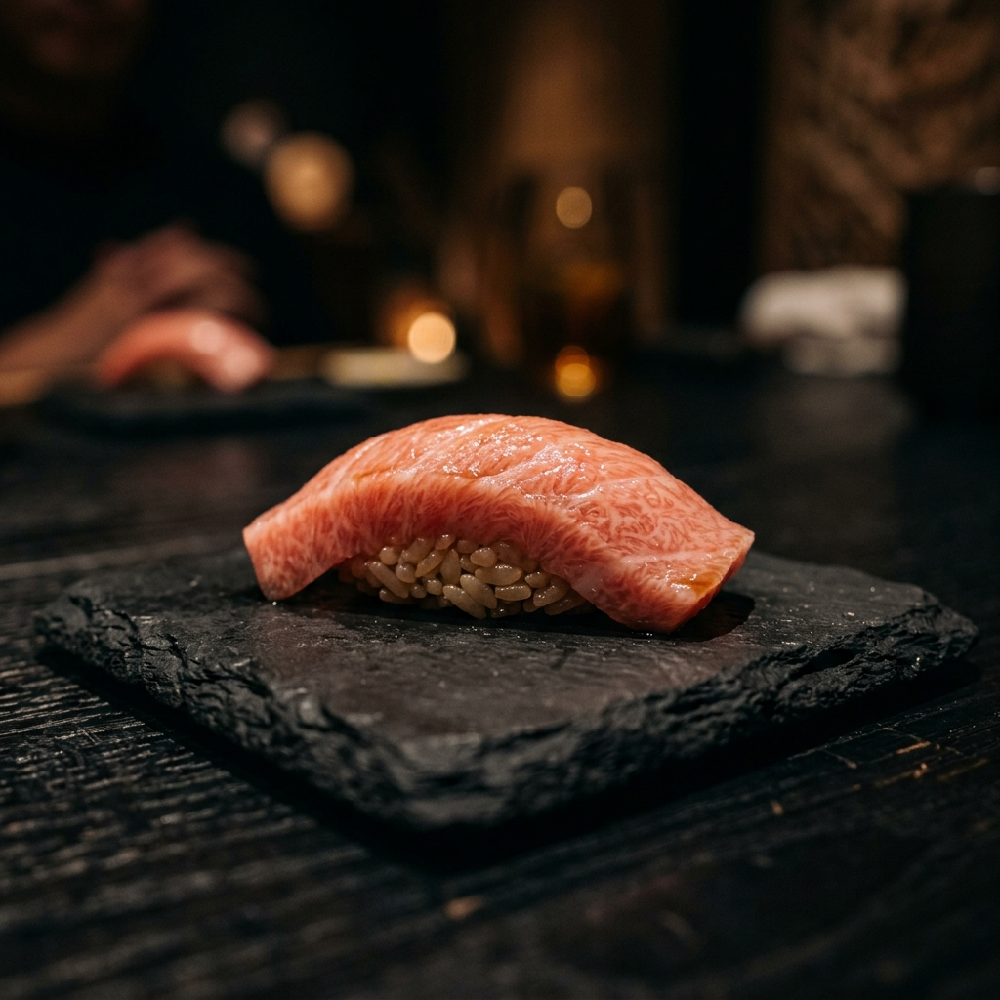
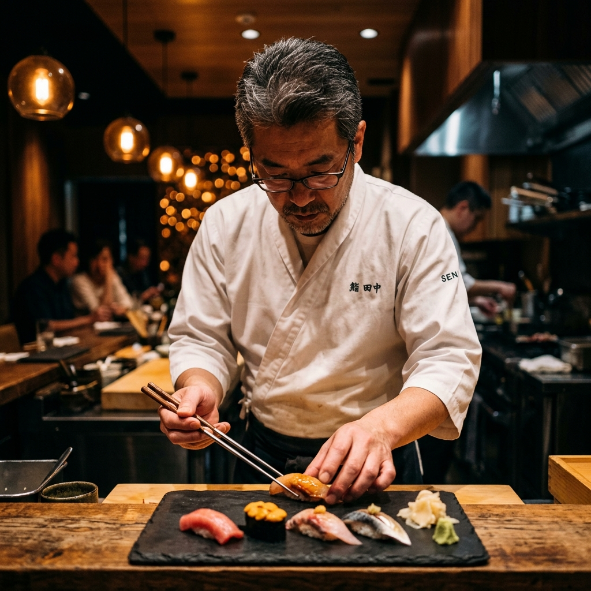
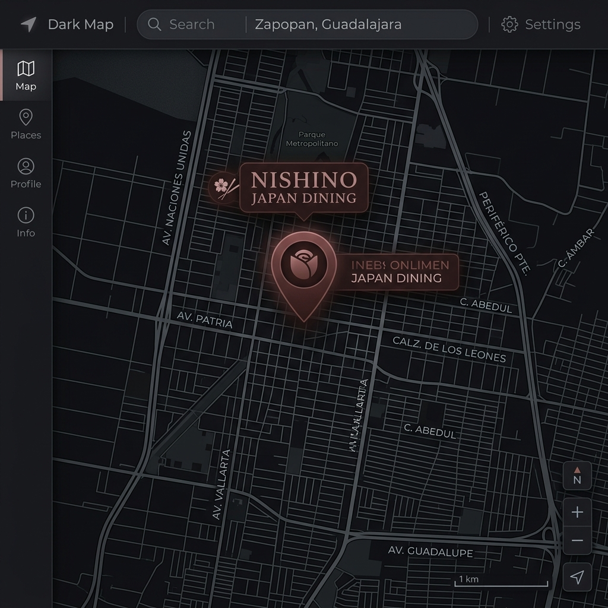

Chu-Toro
Atún de ventresca media, textura mantequillosa, sabor profundo y delicado.
$185
Especial

"Practicar, repetir y cuidar."
En Nishino creemos que la excelencia no es un accidente — es el resultado de la disciplina silenciosa y el respeto absoluto por cada ingrediente. Nuestra cocina no busca impresionar con complejidad; busca emocionarte con precisión.
Cada corte, cada temperatura, cada presentación es el resultado de años de práctica y de una filosofía heredada de las cocinas más respetadas de Japón, traída a Zapopan con orgullo y pasión genuina.
Av. Naciones Unidas 7880 Local 1
Lírica Towers, Zapopan, Jalisco
C.P. 45116, México
